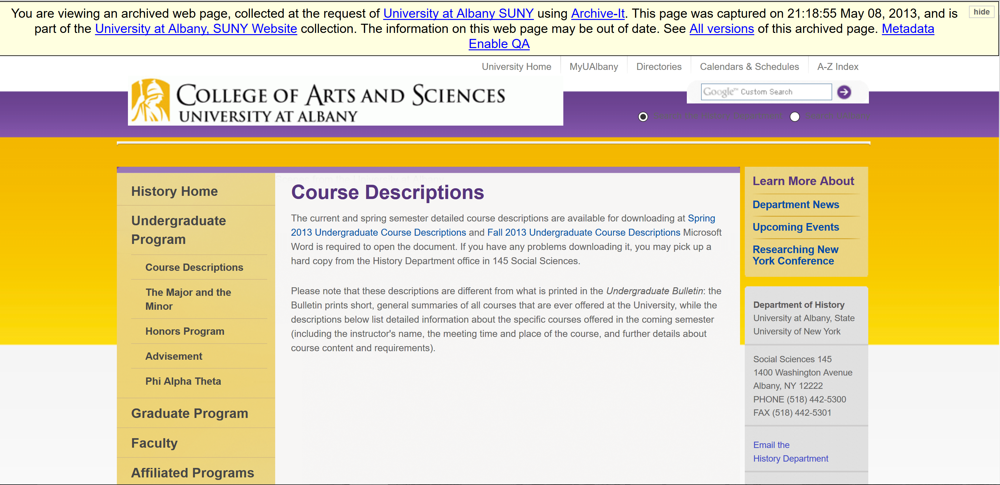
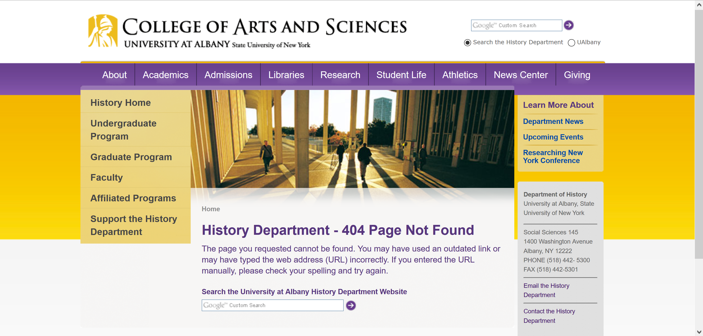

A Sustainable, Large-Scale, Minimal Approach to Accessing Web Archives
Gregory Wiedeman
University Archivist
University at Albany, SUNY
@gwiedeman
 github.com/UAlbanyArchives
github.com/UAlbanyArchives
Web Archiving at UAlbany
- Partner since 2012
- 37,169,775 documents, 898.9 GB captured
- Primary goal to preserve permanent university records
- Became my responsibility in April 2015
- www.albany.edu
- subdomains
- www.ualbanysports.com
- www.albanystudentpress.net
Web Archiving at UAlbany
- Began outside collecting this year
- New York State Politics, Labor, Capital Punishment
- New York Civil Liberties Union
- Environmental Advocates of New York
- WAMC (NPR station)
- New York State Business Council
- Civil Service Employees Association (CSEA)
- Senator Kristen Gillibrand
- Senator Chuck Schumer
Public Access
Relationship with Traditional Collections
- One-to-one seeds and fonds
- New York Civil Liberties Union
- Environmental Advocates of New York
- Many-to-one: one seed to many fonds
- Campus Offices
- Office of the Provost
- Office of Facilities Management
- Academic departments
- Department of Africana Studies
- College of Engineering and Applied Sciences
Records that need to be discoverable
Records that need to be discoverable
Integration with Collection Management
- Old custom CMS database for collection management
- No API or way to reuse data
- Plan to move to ArchivesSpace in Fall 2016
- Have needs now
Integration with Collection Management
Integration with Collection Management
- Wayback CDX server
- Archive-It CDX for Collections

Integration with Collection Management
Future: ArchivesSpace Integration

Access
- Archives public access systems are terrible
- Currently testing new system
- Drupal, XTF, Static Page Generation
- Bootstrap 3
- Access to Web Archives
http://bit.ly/2ajx4Ow
http://bit.ly/2ajx4Ow
http://bit.ly/2ajx4Ow
http://bit.ly/2ajx4Ow
http://bit.ly/2ajx4Ow
http://bit.ly/2ajx4Ow
http://bit.ly/2ajx4Ow
http://bit.ly/2ajx4Ow
http://bit.ly/2ajx4Ow
http://bit.ly/2ajx4Ow
http://bit.ly/2ajx4Ow
http://bit.ly/2ajx4Ow
Needs
- API for provenance information
- Seeds
- Scoping rules
- Crawl limits
- API for search